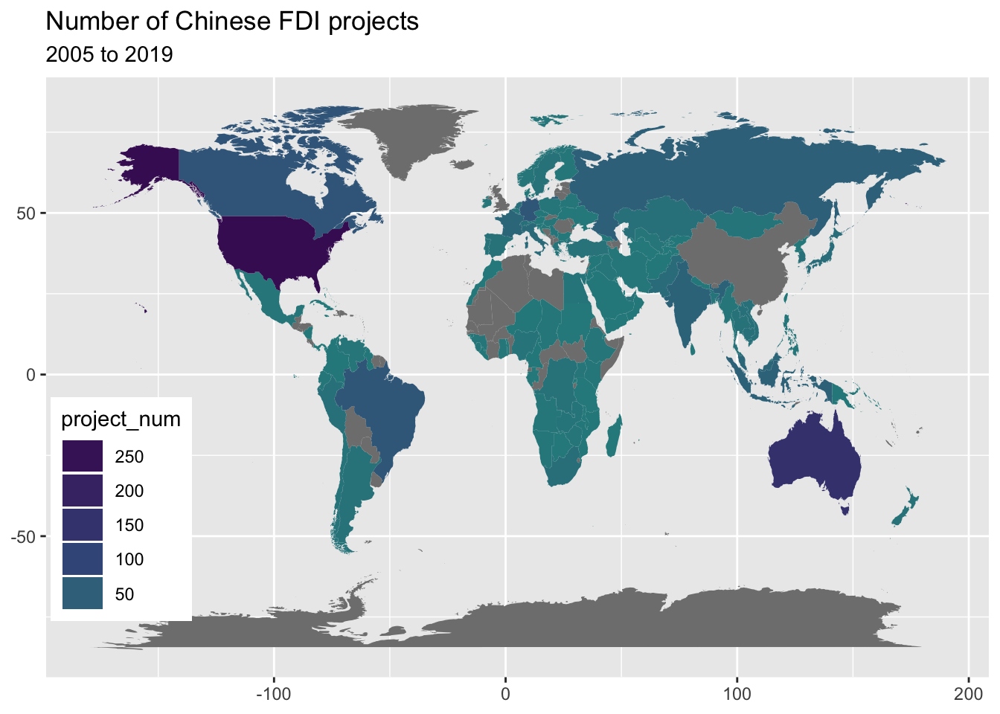

Chapter 3 Size of Investment
3.1 China Foreign Investment By Region

The graph compares China’s investment to foreign countries by different target regions in terms of project numbers, between 2005 and 2014. We used the percentage to present the number of projects. The top three target regions or countries are Europe, East Asia, and the USA. However, if we combine the data from North America with the USA, then North America should be the second most popular target of Chinese investment. MENA region has the fewest number of projects.
3.2 Investment over World
We further plot the countries on the world map, and have a detailed insight on the world distribution:

During 2005 to 2014, we can find that Chinese outward Foreign Direct Investment mainly focuses in USA and Australia,following by Canada, Russia, Brazil, Germany, and India.
(Additionally, we find that Pakistan has the deepest color, which is not surprising. China-Pakistan relations has been historically amicable. Since the announcement of the Belt and Road Initiative in 2013, China has invested dearly in the China-Pakistan Economic Corridor, in which Pakistan is the sole destination of investment. )